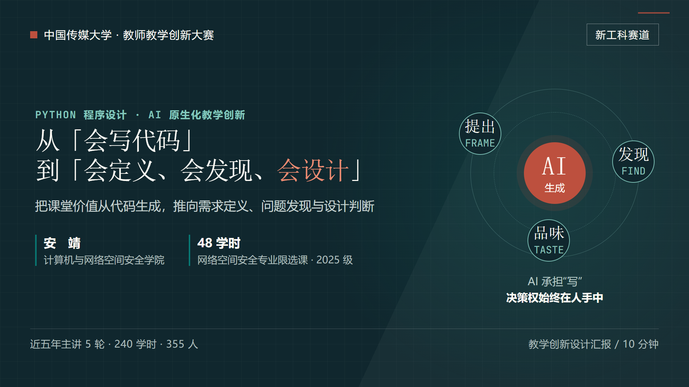

第七届中国传媒大学教师教学创新大赛 · 新工科
从「会写代码」
从「会写代码」
到「会定义、会发现、会设计」
《Python 程序设计》48 学时整门课程重构：把课堂价值从代码生成，推向需求定义、问题发现与设计判断。

汇报依据¶
现场汇报以教学创新设计汇报为主。参赛教师结合教学大纲和教学实践，全面说明整门课程的设计思路， 突出教学改革与创新，展示相关过程性支撑资料。汇报时间不超过 10 分钟。
—— 本科生院〔2026〕63号
在线汇报为 14 页主线 + 3 页答问备查，主讲约 9 分 30 秒。主线沿着“为什么改 — 改成什么 — 怎么实施 — 证据到哪一步”展开，备查页提供三项能力测量设计、材料来源与评分维度覆盖关系。
三项能力¶
提出需求把模糊任务变成可执行、可验证的规格：用户与场景、输入输出、边界、失败路径、验收标准与关键取舍。
发现问题面对 AI 生成结果，定位缺陷、识别需求遗漏与安全风险，说明后果、判断优先级并完成修复。
设计品味在多个“能跑”的方案之间比较结构、接口、可维护性、安全与成本，做出与场景匹配、理由清楚的取舍。
三项能力落到整门课程的目标、内容、五步循环与过程性评价中，详见 M0 课程导论。它们仍是本轮课程要持续观测的目标，不把设计写成已完成的学习成效。
整门课程设计¶
48 学时 · 8 个模块
对照课程教学大纲重排 M0–M7：工具性内容做减法，AI 应用开发与综合项目做加法，总学时不变。
对照课程教学大纲重排 M0–M7：工具性内容做减法，AI 应用开发与综合项目做加法，总学时不变。
一门课的整体设计
目标、内容、教学法、环境、评价与课程思政同向调整，而不是在旧课上追加一个 AI 工具演示。
目标、内容、教学法、环境、评价与课程思政同向调整，而不是在旧课上追加一个 AI 工具演示。
AI 结对开发
提出需求 → AI 生成 → 发现问题 → 运行验证 → 设计迭代；AI 承担“写”，人保留定义、判断与设计权。
提出需求 → AI 生成 → 发现问题 → 运行验证 → 设计迭代；AI 承担“写”，人保留定义、判断与设计权。
过程性评价
分支提交、逐份批注、协作日志、课堂小测与随机抽行答辩，让“如何形成判断”留下可核验的痕迹。
分支提交、逐份批注、协作日志、课堂小测与随机抽行答辩，让“如何形成判断”留下可核验的痕迹。
模块索引： M0 导论 · M1 环境与工具链 · M2 语言核心 · M3 数据获取与处理 · M4 工程化 · M5 AI 应用开发 · M6 综合项目实战 · M7 总结与展望
课程网站本身即过程性支撑¶
课程网站不是汇报附件或展示橱窗，而是本次课程改革的组成部分：每周课件、模块页、运行场、测验、 互动演示与任务说明都在同一套课程结构中持续迭代、公开留痕。
16 周交互课件
查看 W01 示例，每周课件与模块页、课堂活动相互对应。
查看 W01 示例，每周课件与模块页、课堂活动相互对应。
88 篇课程笔记
按主题索引，保留课程迭代过程中的讲解、示例与答疑。
按主题索引，保留课程迭代过程中的讲解、示例与答疑。
可核验的课程结构
GitHub 仓库保留内容演进， 课程网站与汇报材料使用同一批课程事实。
GitHub 仓库保留内容演进， 课程网站与汇报材料使用同一批课程事实。
证据边界：课程网站、两学时教案、阶段作业提交与批注、小测反馈，能够支撑“课程设计与教学实施已经发生”；
但它们不能单独证明三项能力提升、终结性项目表现或外部采用效果。三项能力的三次等值测量仍是后续评价设计，
不是既有成效数据。
现场材料与可复现构建¶
- 汇报课件源码：
teaching-innovation-deck/ - 构建入口：
python scripts/build_teaching_deck.py - 发布流程：push 到
master→ GitHub Actions 构建课件到docs/innovation-report/→ MkDocs 发布到 GitHub Pages - 交互式汇报直达：https://anjingcuc.github.io/courses-wiki/innovation-report/
课件中的 API 请求与代码审查为离线教学模拟，不调用真实服务，也不伪装成学生真实作答数据。